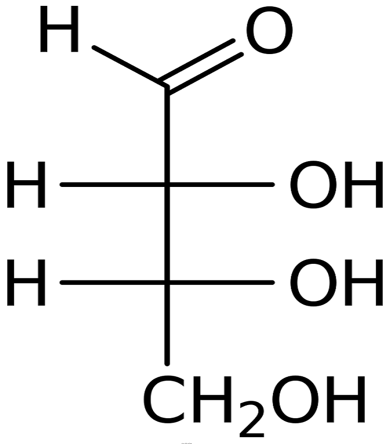
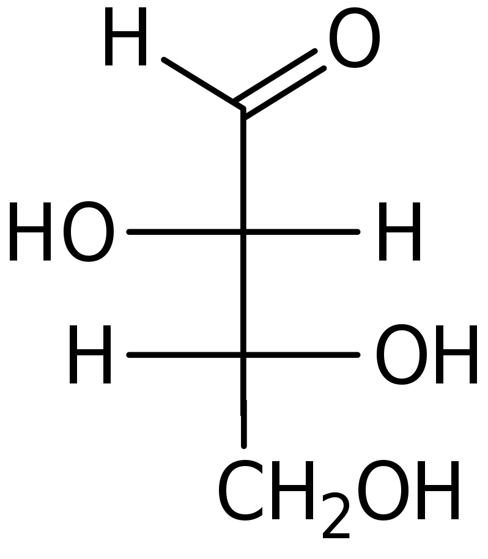
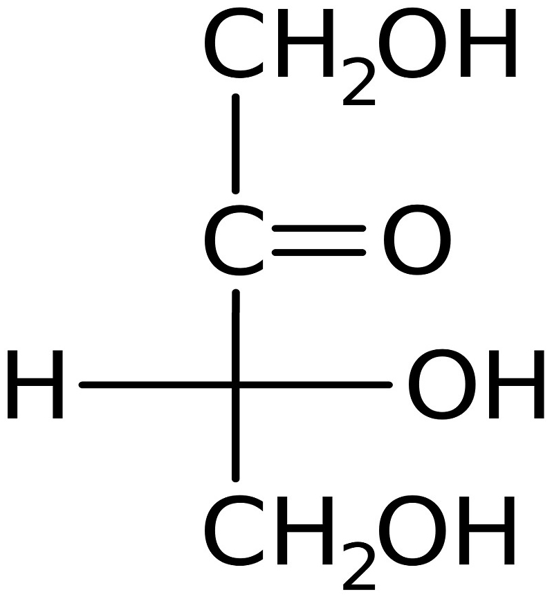

|
Aldotetrosas |
Cetotetrosa D-Eritrulosa |
Las Aldotetrosas tienen dos carbonos asimétricos (C2 y C3),
que determinan la existencia de 4 isómeros posibles (2#C asimétricos).
La Cetotetrosa (eritrulosa) tiene un único carbono asimétrico (C3).
Carbonos asimétricos
|
| (Representación en 2D de la configuración tetraédrica (3D) de los enlaces sp3 del carbono, relevante para definir la disposición en el espacio de los sustituyentes de un carbono asimétrico. Asumiendo que el carbono está en el plano del dibujo, los enlaces horizontales se proyectan hacia delante del plano y los verticales hacia atrás). | |||||||
 |
 |
 |
|||||